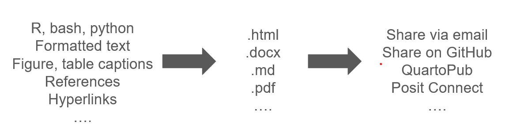

Sharing research as Quarto reports
Overview
| Topic | Time | Topic | Time |
|---|---|---|---|
| Welcome and setup | 11:00 - 11:05 | BREAK | 11:55 - 12:05 |
| What is Quarto? What can it do? | 11:05 - 11:15 | Creating a report from your script | 12:05 - 12:35 |
| Creating Quarto reports from .R, .Rmd files | 11:15 - 11:45 | Sharing your report | 12:35 - 12:45 |
| Ways to share Quarto reports | 11:45 - 11:55 | Where to get more help | 12:45 - 12:50 |
Welcome!
Before we get started
- These slides (and links!) are available at: https://cct-datascience.quarto.pub/sharing-research-as-quarto-reports/
- Please make sure you have RStudio (ver. >= 2022.07.1) and Quarto installed.
Learning objectives
- Know what Quarto is, what it can do, and how it differs from specific programming languages and markup languages you may know of.
- Create your own Quarto report documenting your research.
- Share your report using Quarto Pub, Posit Connect, email, and/or Github.
- Know where to go for additional help and/or adventures in Quarto.
What is Quarto?
- “An open-source scientific publishing system”
- Integrate code, results, and formatted text within one document
- Document types range from static .html pages, to slideshows, to interactive dashboards!
- Published by Posit (formerly RStudio)
What is Quarto?
A Quarto example
Cool, but tricky. What are the benefits?
Reproducibility
Dynamic updating
Easy to share - from coauthors to journals to web audiences
What about RMarkdown?
- Quarto is the “successor” to .Rmd
- .Rmd documents translate easily to Quarto
- Quarto supports languages beyond R
- Quarto has a greatly expanded range of document types
Comparison
| Feature | Quarto | Rmd | Markdown |
|---|---|---|---|
Markup syntax (** for emphasis, etc) |
x | x | x |
| Render to multiple document types | x | x | x |
| Interweave text and code | x | x | x |
| Interweave text and executed R code | x | x | |
| Execute non-R code | x | ||
| Expanded set of document types (dashboards, manuscripts, …) | x |
How do I create a Quarto document?
Let’s start from this R script: https://github.com/cct-datascience/workshop-wednesdays/blob/2023-quarto-reports/20231206-quarto-reports/mouse_report.R
.R to .Qmd
- Create a Quarto document
- Move code chunks over
- Add descriptive text
- Add references
- Add figure/table cross-references and captions
How do I turn an .Rmd into a Quarto document?
Example report document available here: https://github.com/cct-datascience/workshop-wednesdays/blob/2023-quarto-reports/20231206-quarto-reports/mouse_report_RMD.Rmd
Technical changes from .Rmd to Quarto
Most .Rmd documents will render as-is!
Document-level options moved to header
outputchanged toformatChunk-level options moved from
```{r ....}to#|within the chunkknitr::convert_chunk_header(<file_path>)helps with conversion
.Rmd to .Qmd
- Run
knitr::convert_chunk_header - Add additional Quarto features
Sharing Quarto reports
| Hosted online with a shareable URL | Static documents to share person-to-person |
|---|---|
| Quarto Pub | Rendered HTML, pdf, docx outputs |
| Posit Connect | Source .qmd files |
| GitHub |
QuartoPub
Create a free account
Published reports are public
Example: https://cct-datascience.quarto.pub/quarto-workshop-example/
Posit Connect
For university research; accounts available but restricted
Published reports can be public or private
Example: https://viz.datascience.arizona.edu/quarto-workshop-example/
GitHub
Render using the
gfmoutput formatResulting .md files are visible online on GitHub
Published reports may be public or private (depending on repo scopes)
Example: https://github.com/diazrenata/squareone-quarto/blob/main/s3_biomass_as_quarto.md
Sharing rendered documents
Render to
html,docx, orpdfResulting documents are portable
Sharing source documents
Share, edit, and re-render a single .qmd
Especially for collaboration on GitHub
Example: https://github.com/diazrenata/squareone-quarto/blob/main/s3_biomass_as_quarto.qmd
Break!
Practice time: Create a Quarto report from your script
Practice time: Share your report
Pick one (or more!) of the following options:
- Create a QuartoPub account and publish your report
- Render your report as a GitHub document and push it to your GitHub
- Render your report as an HTML file and email it to yourself
Quarto resources
Quarto docs
CCT-Data Science
- Drop-in hours - Tuesdays, 9-10
- Incubator projects
- Upcoming workshops
Data science @ UA
- Coffee & Code
- UA Data Science Slack
Online Quarto communities
- Blogs
- StackOverflow
- RStudio message board: https://community.rstudio.com
Thank you!
Thank you for attending!
For details on drop-in hours, upcoming workshops, and Incubator Program offerings from CCT-Data Science, see our website!